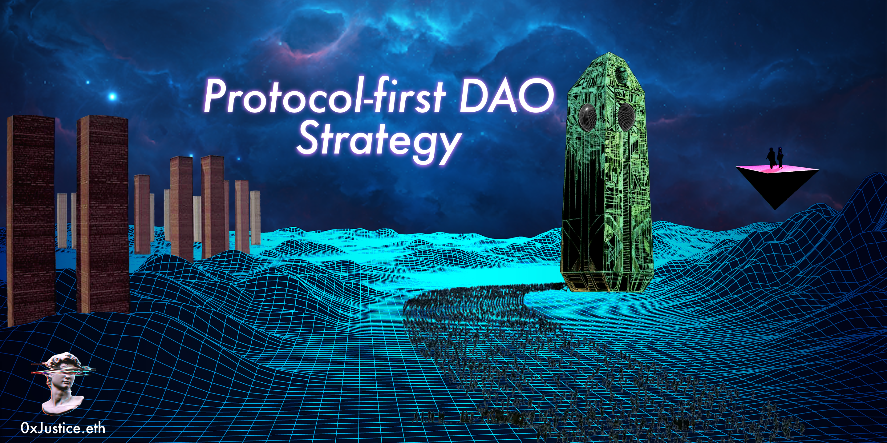
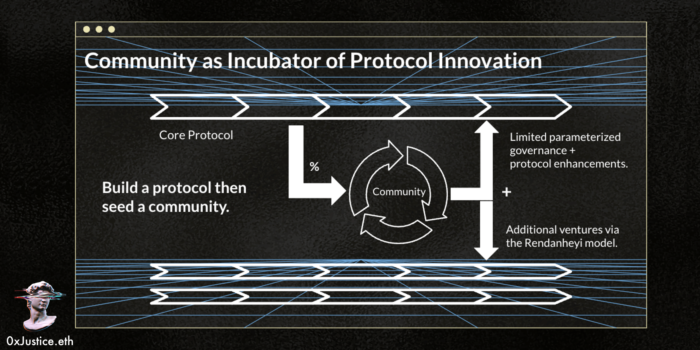

Protocol-first DAO Strategy
Originally published at https://paragraph.com/@0xjustice/protocol-first-dao-strategy

The unstructured community-first experiment has failed. The truth is that small founding teams create winning products and services. The community-first maxim militates against this, arguing that success correlates to the number of people in Discord. This assumption encourages a "bread and circuses" pattern of paying people for low-value activities. It also conflates those with a founder mentality with contributors seeking paid work.
Community-first must give way to protocol-first, which entails starting with a business model and a strategy for creating sustainable value. Startups are not communities; the DAO ecosystem is destroying itself by acting like they are.
The next generation of DAOs will be protocols with limited governance. This approach was always the way. It's just taken some time to get back to it. Governance is a liability, not an asset. It's a necessary evil we should use in tightly confined areas with specified parameters. See Governance Minimization
Designing, configuring, and discussing DAO architecture should be more about engineering and less about religion and politics. The DAO discussion should center on token engineering, incentives, and organizational design and less on the evils of capitalism and traditional corporations. How do we get there?
Beyond Dogma
The meaning of a DAO is not defined by formal necessity. The Daemon sci-fi series inspired Vitalik's ideas on DAOs, and a decentralized Uber was one of the earliest examples of what a DAO could be. Neither had governance. The tie that bound these early inspirations together was the sense that humans worked for code. Both examples looked different from what many argue a DAO must possess to be legitimate today.
Nothing in any seminal DAO writings would suggest that DAOs must be permissionless, flat, or community-sized to be legitimate. Vitalik and Szabo spoke of DOs, DAOs, and DACs with creative flexibility and framed them all in terms of on-chain organizations secured by cryptography. Vitalik concluded his seminal paper with the following admission.
“The above definitions are still not close to complete; there will likely be gray areas and holes in them, and exactly what kind of automation a DO must have before it becomes a DAO is a very hard question to answer.” - Vitalik Buterin (DAOs, DACs, DAs and More: An Incomplete Terminology Guide, emphasis added)
Blockchain protocols don't need to distribute ownership because it's the only way to be fair. They can distribute ownership to drive adoption, amplify neutrality by giving users control, or to avoid regulatory scrutiny. The DAO acronym doesn't require many of the accouterments we've come to associate it with.
The "decentralization" in DAO has to do with the geographical location of the code and its users, not a particular governance system. The "autonomous" in DAO has to do with the idea that agreements between participants are enforced by code and not by legal mandate. The "organization" in DAO emphasizes that this code coordinates people toward a particular end.
DAOs as Incentive Machines
If we broaden our vision of DAO to include any blockchain protocol that employs humans, we can describe a DAO history in three phases.
Bitcoin and Ethereum are pre-governance DAOs or pure incentive machines. They pay miners to solve blocks, and in this way, humans work for the protocol. Bitcoins capped supply and halving creates a problem because the tokenomics that work now will not work later. Ethereum fixes this with an uncapped issuance and a burn mechanism that establishes a mechanic that can work forever. Both chains lack governance, tho. This lack is not a problem but limiting because governance is needed to manage changes to their underlying infrastructure or address more complex issues.
The DAO (2016) and subsequent frameworks like Moloch (2019) introduced on-chain governance and the second generation of incentive machines. This generation of governance primitives functions like investment clubs allowing users to supply money in exchange for exposure to an underlying appreciating basket of assets. Participants are incentivized to be engaged because the funds they direct are made up of their own money.
The third and most recent generation of DAOs is the airdropped, snapshot, Discord-centric, tokenized communities. These captured people's imagination because anyone could launch one, and it required no product or revenue. You could meme an economy into existence with magic internet money.
The issues with these include absent business models (staking is not a business model), voter apathy (not your money, not your concern), no reputation system (low signal on high performers), and wasted money on risky initiatives (grants programs).

The inverse relationship between pure incentive machines and flexibility
Platform Business Models
A business model is a mechanism by which a venture makes money. Platform business models make money by connecting buyers and sellers and taking a cut of the transaction. They create value by matching and facilitating. They don't own the means of production; they form the means of connection. They're pure informational businesses whose growth comes from network orchestration. They're coordination engines.
The platform approach is the most effective coordinator when you look at the above classes of crypto incentive machines. The advantages of platform business models are not unique to crypto. It’s a business model designed for the information economy of the 21st century.
From eBay, Uber, Airbnb, Upwork, PayPal, and Google. The platform business model is everywhere. We can even frame social media as merely a platform for infinite content creation with advertising layered on top. Networks are not the goal. The network is simply an enabler for platform development.
Deloitte published research sorting companies into four broad economic activity categories and found that the four platforms are 2x more efficient value creators. Platform business models possess a "..market multiplier of 8.2, as compared with 4.8 for technology creators, 2.6 for service providers, and 2.0 for asset builders." - Platform Revolution
The internet has digitized attention, and crypto has digitized money. Platforms digitize business. Sound familiar? We call DAOs coordination tools, but we can't talk about what that means without framing them in the context of platform business models. DAOs will protocolize and decentralize platform business models.
The Place of Governance
Governance-free protocols give us scale, neutrality, censorship resistance, and efficiency. They are the very means by which we reduce coordination. They represent a core value proposition of on-chain coordination. Why introduce governance at all, then?
We need governance chiefly because humans can do things machines can't. Humans can evaluate creative work and think in metacognitive ways to identify and address unforeseeable risks and opportunities. We need governance to expand the programmatic constraints of the network - to go from Uber to Uber Eats.
Because of this, it's fitting to outsource these creative activities to human agents by allocating a percentage of the protocols' resources to those activities and providing a framework for that to happen. This outsourcing to humans is the heart and spirit of the DAO vision and how the machine funds its growth and advancement.
The real innovation lies not in entirely open-ended and undefined governance but in protocolized techniques for incentivizing and capturing the value created by protocol improvement and expansion.
You can begin to articulate a protocol-first DAO strategy by stepping through the following stages:
Model as a Platform
-
What's the vertical? A platform trying to do everything will do little well. The theory of the firm says we arrange into organizations to minimize transaction costs. A similar principle exists for platforms because by focusing on a business domain, they can provide domain-specific knowledge and services that will attract network participants.
-
What are the market sides? Identify the supply/demand sides of the market. Describe who they are and what will be attracted to the platform. There can be more than two, but complexity increases with each additional side. Platforms are not free lunches, and managing them is more complex than a traditional pipeline business. Each side of the market will only come if the other side is present. This challenge is called the cold start problem, and distributing ownership is one way to address it.
-
What's the core interaction, and how will value be captured? The core interaction could be teaching a class, signing a contract, or conducting an event. How will you financially capitalize on these interactions? The platform is not sustainable if it doesn't capture a cut of every successful match. You can add more interactions later, but you're unlikely to master multiple before mastering one.
Crystallize Into a Protocol
AMMs and Defi don't have a corner on the protocol game. It’s time to get more creative in what's possible. Once you have framed a venture in terms of a platform, it's possible to describe it as a protocol.
Protocols are public building blocks that anyone can build on or use in combination with other protocols. They are unstoppable, immutable, and encourage compilation. These features and built-in financialization set them apart from previous web technologies. Any platform business model can be instantiated as a protocol and outperform legacy Web2 platforms.
Seed a Community
I'm advocating for platform-first, not protocol-only. Once you have a protocol, you can seed a community. Community-sourced projects can be funded and endorsed in a protocol fashion using the following techniques.
The DAO can fund projects exclusively through quadratic matching and capture the upside of funded projects through token splits to minimize risk and align incentives. All of this can be done in a DAOs native token with the requirement that funded entities use it for services. This pattern ultimately results in network participants building protocol utility.

Seeding Community + Community as the ultimate incubator of innovation
This proposed model is the core application of the DAO construct: Translating platform design science into on-chain protocols and expanding them to encompass open-ended development. This is another reason it's essential to protocolize the Rendanheyi business model. Read more about that in Efficient DAO Design.
Conclusion
Communities are a consequence of protocols, not the cause. They form around successful products. There may be a place for raising money pre-product (community first), but it has many associated problems. Namely, you must provide governance to those investors or risk accusations of securities law violations. Trying to build a product with many stakeholders, each vying for their way, produces "designed by committee" results.
An unlimited decision space is slow and prone to gridlock. It's antithetical to the rapid decision-making necessary for early-stage product ideation and development. Expecting all users to engage in governance is unrealistic and a disservice. Regular users of your protocol shouldn't need to be concerned with governance. That can be available to people at a deeper level of the contributor funnel.
The protocol-first approach avoids many of these problems. Users are free to use the protocol, and governance is tightly constrained to specific knobs of the organization. Protocol-first thinking forces us to consider sustainability from the outset. With this more structured framing, we can explicitly define and design better coordination systems.
There's no "right" way to design a DAO, just as there is no one way to run a business. Every business is different. The goal is to introduce an alternative mental model into the conversation. The danger of requiring DAOs to be structureless tokenized communities is that if those systems fail to work, it will have been the failure of DAOs, and that's a misrepresentation of all that DAOs can be.
New mental models are only the first step. The Polygon Decentralized Org Development (DoD) Team is working to create a DAO Playbook to help businesses and DAO architects articulate and describe the strengths and weaknesses of various DAO configurations. We will work closely with tool makers and thought leaders to advance the DAO conversation in 2023.
Originally published on 0xJustice.eth